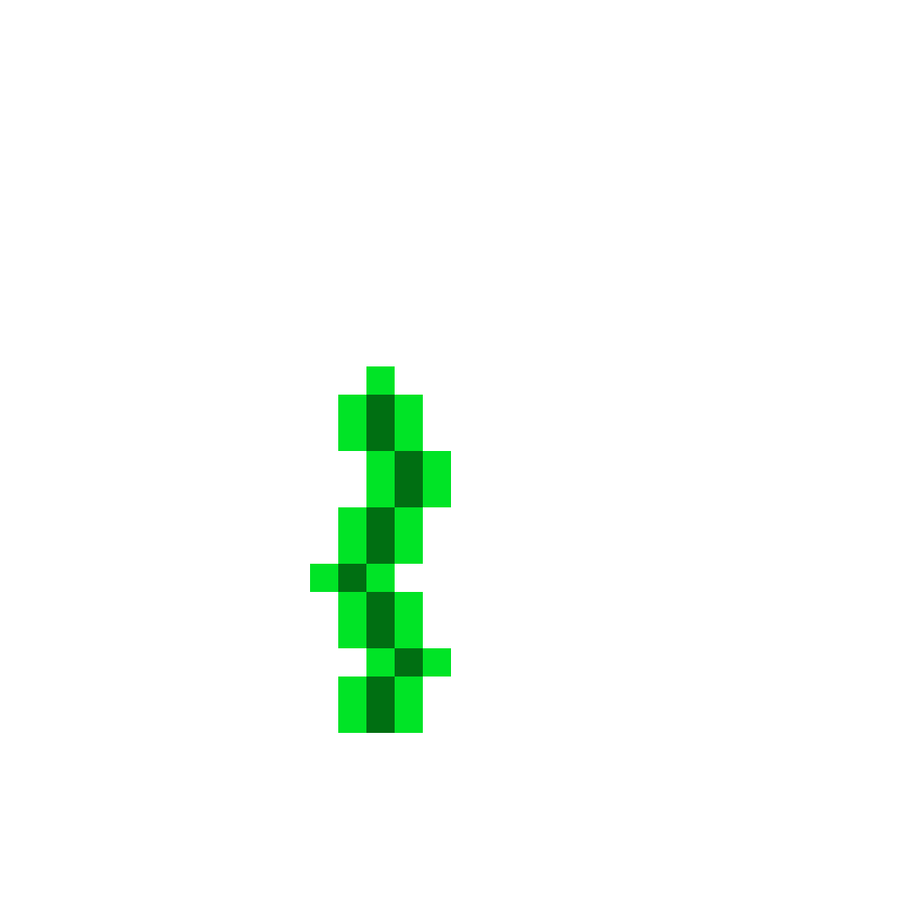
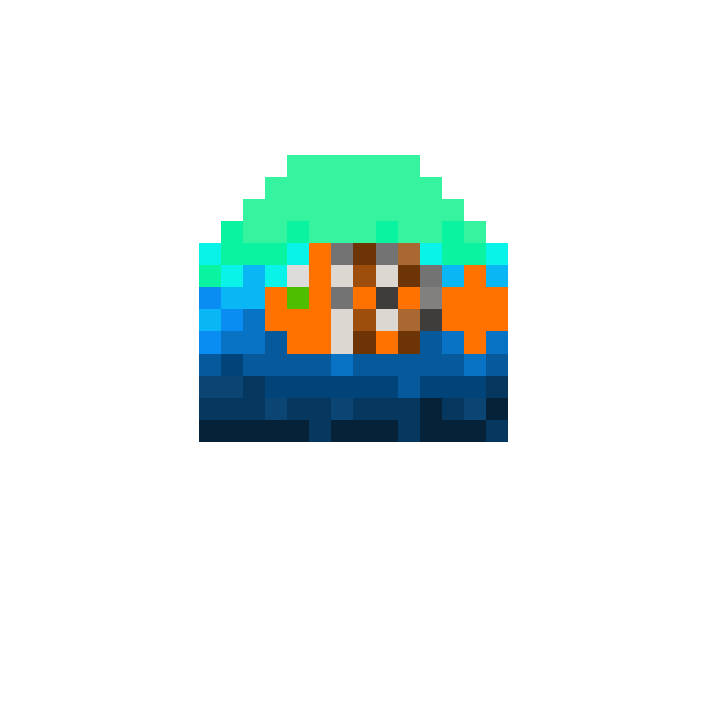
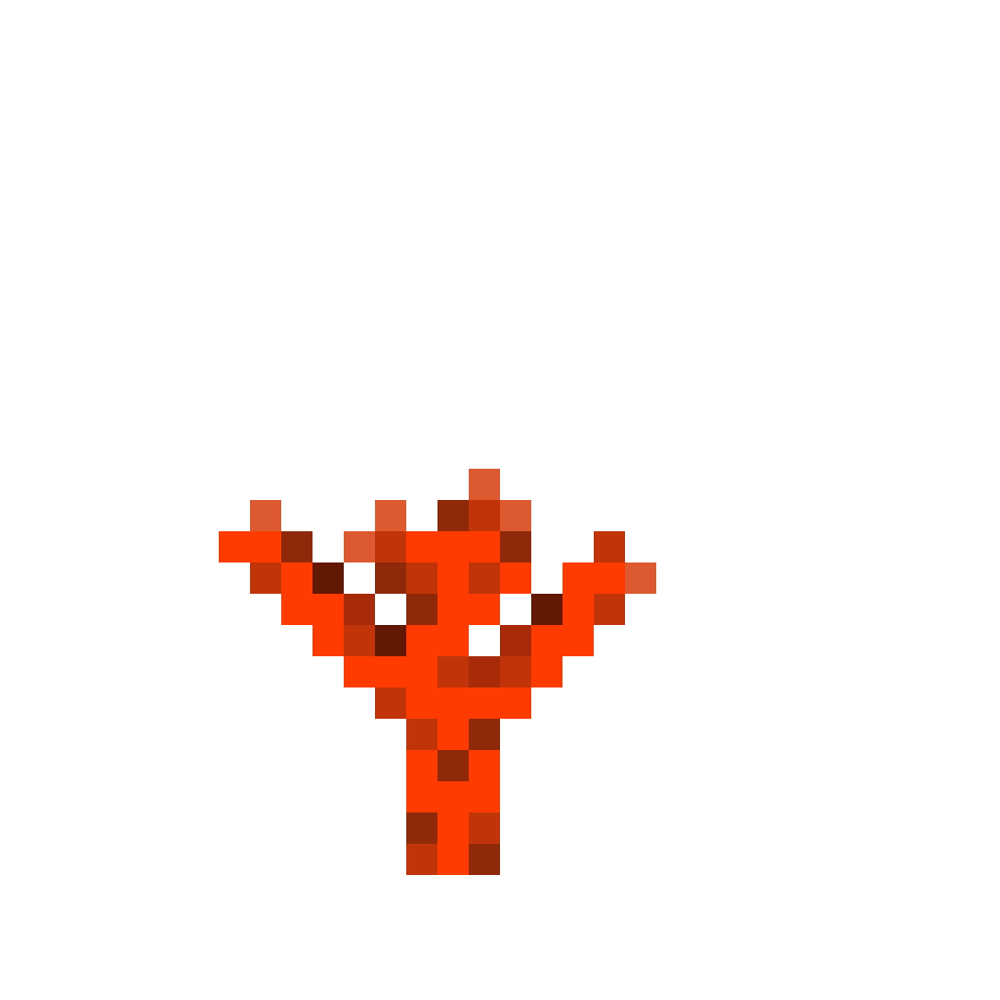
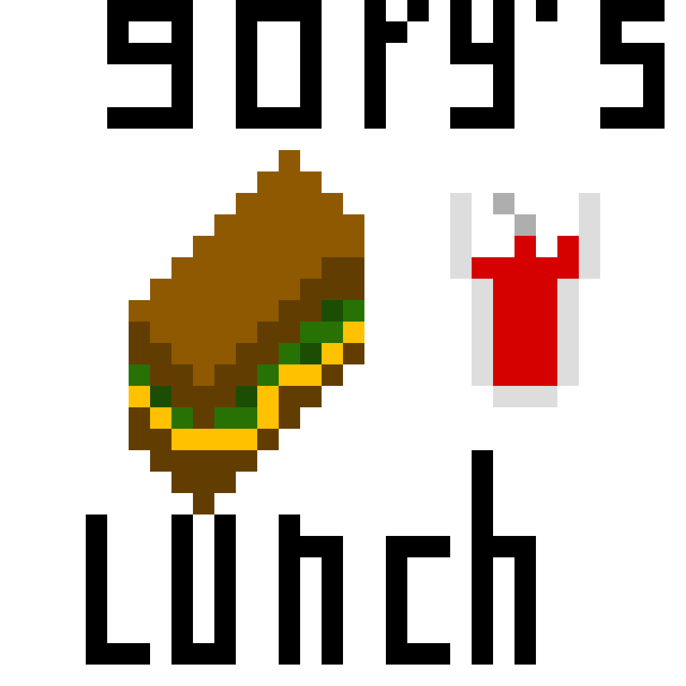

De zuurstof in het schip word gemaakt door h2o te splitsen in h2 en o2. Als deze machine kapot gaat moet de boot zo snel mogelijk bovenwater komen. De machine zit aan de linker kant van de boot. Het zuurstof gehalte in de boot mag niet op 15% van de normale hoeveelheid komen. Als dit gebeurt krijgt iedereen een zuurstof gebrek en gaan we alemaal dood. Daarom is het zo belangrijk dat de kapitien niet bewusteloos raakt. Want dat kan nog meer katastrofale gevolgen.

De motor is een van de weinige delen van het schip met een code. En die code moet ingevoerd worden op de boardcomputer van de kapitein. De code staat voor veiligheids redenen niet op deze site. Als er iets met de boot gebeurt moet er gelijk naar boven gegaan worden. Aleen de kapitein weet de code. De moter is een serie 15-longcov-id. Ook moet de motor altijd vol zijn. Want er zijn geen tankstations onderwater. In geval van hoogste nood liggen er duikpakken met zuurstof tanks achterin. Dit is niet in elke onderzeer het geval want we besparen geld als we het niet doen.

De navigatie is een balangrijk deel van de boot. De navigatie zorgt ervoor dat de boot niet kwijt raakt. navigatie werkt niet met satalieten maaar met een kompas. Want als wij heel diep onderwater zijn werkt de navigatie met sataliet natuurlijk niet meer. Daarom is de navigatie ruimte niet in de controlekamer want in de controle kamer zit veel metaal dat het kompas kan verstoren. Degene die werkt in de navigatie kamer is Gary. Er moet wel snel een nieuwe extra persoon op dat station worden aangewezen. Want ze moeten constant actief zijn anders weten ze niet meer waar ze zijn.

Een lunchmachine is handiger dan een keuken in een onderzeeër. De lunchmachine neemt namelijk veel minder ruimte op. Ook zorgt de lunchmachine ervoor dat we spaarzaam met ons eten omgaan. Iedereen heeft een eigen code die die moet invullen om hun eigen gepersonalieseerde lunch te krijgen. gerucht gaat dat er een lunchdief in ons midden zit. De kapitien zijn lunch is al 7 keer gestolen. En het was pas MAANDAG! In ieder geval of als het Gary's luch is in EIdergeval. Word er op dit moment druk gezocht naar de lunch dief en nieuwe codes worden uitgedeeld om te zorgen dat de lunchdief zijn/haar slag niet meer kan slaan.

De crew vn deze onderzeeër is echt heel erg gezzelig. Gary en zijn eiër grappen. En henk met zijn goede roasts. Het is zo gezellig dat ze soms vergeten te werken. Dus als je no werk zoekt met gezzelige mensen wijn zijn jouw nummer 1.